1 · Inflammation
Instructional Objectives
- Describe the molecular mechanisms of inflammatory processes
- Describe the various types and etiologies of inflammation
- Compare and contrast the mechanism of white blood cells in the inflammatory response
- Describe the vascular changes associated with acute inflammation
- Describe the cellular changes associated with acute inflammation
- Compare and contrast mediators of inflammation and their functions
1.1 · Objective a — Molecular mechanisms of inflammatory processes
Inflammation is the reaction of vascularized living tissue to injury. The word vascularized is doing real work in that definition — tissue without a blood supply cannot mount the response at all. The process is a sequence of events that heals the injury or implant site, either by generating new tissue from native parenchymal cells or by forming fibroblastic scar tissue.

The five main processes, in order:
| # | Process |
|---|---|
| I | Increased blood flow |
| II | Increased permeability |
| III | Migration of neutrophils |
| IV | Chemotaxis |
| V | Leucocyte recruitment & activation |
1.2 · Objective b — Types and etiologies of inflammation
| Acute | Chronic | |
|---|---|---|
| Timescale | Seconds, minutes, hours or days — begins within seconds of injury | Longer — days, weeks, months |
| Histology | Neutrophil-predominant exudate | White blood cells (lymphocytes and macrophages), proliferation of blood vessels, fibrosis, tissue necrosis |
| Nature of damage | May be purely physical, or may involve activation of an immune response (trauma versus a bee sting) | Driven by persistence rather than by the initial insult |
The three causes of chronic inflammation, each with the lecture's own examples:
| Cause | Examples |
|---|---|
| Persistent infection | Bacteria, viruses, fungi, parasites |
| Prolonged exposure to potentially toxic agents | Endogenous — atherosclerosis · Exogenous — particulates such as silica |
| Autoimmunity | Rheumatoid arthritis, lupus |
1.3 · Objective b — Patterns of inflammation
Chronicity and pattern are two independent axes. A process is acute or chronic, and separately shows one of these patterns:
| Pattern | What defines it |
|---|---|
| Serous | Largely plasma, low protein; occurs early or with mild inflammation |
| Fibrinous | Large amounts of fibrinogen forming a thick meshwork; removable only by fibrolytic enzymes — failure of that results in scar tissue formation |
| Suppurative (purulent) | Remnants of white blood cells, protein and tissue debris — that is, pus |
| Hemorrhagic | Damage to blood vessels; occurs alongside other exudates |
| Catarrhal | Mucus hypersecretion accompanying inflammation of a mucous membrane |
| Ulcerative | Necrosis and sloughing of surface epithelium, exposing underlying connective tissue |
| Pseudomembranous | Superficial necrotic layer of fibrin, inflammatory cells and debris forming a membrane-like covering over the affected mucosa |
| Gangrenous | Severe necrosis with or without superimposed bacterial infection — dry is coagulative necrosis, wet is liquefactive necrosis from infection |


1.4 · Objective c — Mechanism of white blood cells
| Granulocytes (polymorphonuclear, PMN) | Agranulocytes (mononuclear) | |
|---|---|---|
| Defining feature | Differently staining granules in the cytoplasm on light microscopy — membrane-bound enzymes that digest phagocytized particles | Apparent absence of granules — though they do contain non-specific azurophilic granules (lysosomes) |
| Members | Neutrophils, basophils, eosinophils | Lymphocytes (B and T cells), monocytes, macrophages |
Note the terminology trap: PMN refers to all granulocytes, not to neutrophils alone, even though neutrophils are the ones usually meant in conversation.
| Cell | Nucleus & granules | Role |
|---|---|---|
| Neutrophil | Multilobed nucleus that may look like multiple nuclei; cytoplasm appears transparent from fine pale lilac granules | First responder to microbial infection; bacterial and fungal defence; very active phagocyte. Cannot renew its lysosomes, so dies after a few pathogens — their death in large numbers forms pus |
| Basophil | Bi- or tri-lobed nucleus; coarse granules | Allergic and antigen response via histamine |
| Eosinophil | Bi-lobed nucleus; granules a characteristic pink-orange | Parasitic infections; predominant cell in allergic reactions — asthma, hay fever, hives |
| B lymphocyte | Agranulocyte | Humoral immunity: makes antibodies, acts as antigen-presenting cell, becomes memory B cells. Essential to adaptive immunity |
| T lymphocyte | Matures in the Thymus; carries T cell receptors | Cell-mediated immunity (subsets below) |
| Monocyte | Kidney-shaped nucleus; abundant, usually agranulated cytoplasm | Phagocytoses then presents pathogen fragments to T cells; leaves the bloodstream to become a tissue macrophage. Can replace its lysosomal contents |
| T cell subset | Function |
|---|---|
| T helper cells | Activate and regulate T and B cells |
| CD8+ cytotoxic T cells | Virus-infected and tumour cells |
| Regulatory (suppressor) T cells | Return immune function to normal after infection; prevent autoimmunity |
| Natural killer cells | Virus-infected and tumour cells |
1.5 · Objective d — Vascular changes in acute inflammation
The reviewed sequence opens with four vascular events, in this order:
| 1 | Vasoconstriction |
| 2 | Vasodilation |
| 3 | Increased vascular permeability |
| 4 | Haemoconcentration and stasis |
1.6 · Objective e — Cellular changes in acute inflammation
The sequence continues with five cellular events:
| 5 | Leukocyte adhesion |
| 6 | Transmigration |
| 7 | Chemotaxis |
| 8 | Aggregation |
| 9 | Phagocytosis |
Acute inflammation in review: short term (minutes to days), with exudation of fluid, plasma, proteins and leukocytes (neutrophils), then phagocytosis and enzymatic release. Activated neutrophils and macrophages digest foreign material through four steps — recognition, attachment, engulfment, degradation — and recognition and attachment are enhanced when serum factors (opsonins) are present.
Chronic inflammation in review: long term (at least days), characterised by macrophages, monocytes and mononuclear cells including lymphocytes and plasma cells, accompanied by proliferation of blood vessels and connective tissue. Lymphocytes and plasma cells mediate antibody production; macrophages process and deliver antigen to immunocompetent cells.
1.7 · Objective f — Mediators of inflammation and their functions
| Mediator | Function |
|---|---|
| Histamine | First mediator of the initial inflammatory response. Dilates arterioles and increases permeability of capillaries and venules |
| Serotonin | Vasodilation and increased vascular permeability |
| Plasma proteins | |
| Bradykinin | Increases capillary permeability, causes pain, and may increase leukocyte chemotaxis |
| Complement components | 10% of circulating serum proteins; chemotactic to neutrophils and monocytes; the cascade may damage bacteria |
| Coagulation system | Creates a fibrous network at the site to trap exudate, microorganisms and foreign bodies, and stops bleeding so repair can begin |
Opsonins are proteins that adhere to foreign material and make it easier for immune cells to recognise and attach to it.
| Opsonin | What it is | Recognised by |
|---|---|---|
| Immunoglobulin G (IgG) | An antibody | Fc receptors on macrophages and neutrophils, which recognise the Fc portion |
| Complement fragment C3b | Produced when the complement system is activated; binds microorganisms or foreign material | Complement receptors on immune cells |
Source: 1. Inflammation.pptx (Professor Lauren Reynolds), Slides 1–35, and the PAJ 5101 syllabus instructional objectives. Course text: Robbins & Cotran Pathologic Basis of Disease, 10th edition — Chapter 3, “Inflammation and Repair”.
2 · Dermatology: Pathophysiology of the Skin
Stacie Gopal, DMS, PA-C
Instructional Objectives
- Review the anatomy of the integumentary system, including the different strata of the integument
- Compare and contrast pathophysiology of common primary skin lesions
- Compare and contrast pathophysiology of common secondary skin lesions
- Describe the molecular mechanisms of common dermatological conditions
2.1 · Objective a — Anatomy of the integumentary system
Skin is the largest organ in the body, with hair, nails and glands as accessory structures. Its functions are a physical barrier against pathogens, ultraviolet light, fluid loss and trauma; thermoregulation; sensation; and an endocrine role.

Three layers: epidermis, dermis and subcutaneous (hypodermis). The dermis is where the nerves and vasculature sit.
There is no vasculature in the epidermis. She said this in the first thirty seconds and told the class to carry it through the whole lecture: “do keep that in mind … it’s important for you to remember … that will help you differentiate things as we go.” It is the reason an erosion cannot bleed and cannot scar while an ulcer can, and the reason the dermal-epidermal junction is the boundary that matters in half the definitions below.
The epidermis
Stratified squamous epithelium, 0.05 to 1.5 mm, with four cell types — keratinocytes (about 90%), melanocytes, Merkel cells and Langerhans cells. Turnover is every 30 to 60 days and is more rapid in younger patients.
Keratinocytes are about 90% of the epidermis, and keratin is the recurring theme. “That’s important to remember, because they produce keratin, and as we walk through the pathophysiology of the skin today you’re going to hear keratin over and over and over again.” It duly reappears below in hyperkeratosis, the epidermal inclusion cyst, the fissure and lichenification. This was also the one point the prosody analysis independently flagged.

| Stratum | What defines it |
|---|---|
| Basale (deepest) | Single layer of rapidly dividing columnar keratinocytes — the site of cell division. Contains melanocytes and Merkel cells (light touch) |
| Spinosum | 8–10 layers joined by desmosomes, giving the prickle-cell appearance. Contains dendritic and Langerhans cells, the immune sentinels |
| Granulosum | 3–5 layers of diamond-shaped cells containing keratohyalin granules |
| Lucidum | 2–3 layers of flattened dead keratinocytes with clear protein and lipids |
| Corneum (outermost) | 20–30 layers of keratin and dead keratinocytes, packed and cemented into a semi-impermeable barrier |
The dermis and the appendages
Two connective tissue layers: papillary (thin, superficial) and reticular (dense, deeper). Collagen is the primary component, produced by fibroblasts, giving tensile strength; elastic fibres of elastin and fibrillin give recoil. Cells include fibroblasts, macrophages, histiocytes, adipocytes and mast cells, which mediate immunoglobulin E-driven inflammation.
Where the mast cells live. Flagged twice — “it’s important to remember that this is where our mast cells are located, because we’ll be talking about mast cells a lot later in the pathophysiology”, then again on the next slide, “make note of that too”. They sit in the dermis, and they are the mechanism behind the wheal.
| Appendage | Secretion and function |
|---|---|
| Eccrine sweat glands | Open onto the skin surface; water and electrolytes (sodium, chloride); cooling by evaporation |
| Apocrine sweat glands | Axilla and anogenital areas; protein and fatty lipids; scent glands. Apocrine sweat + bacterial degradation = body odour |
| Sebaceous glands | Sebum — triglycerides, wax esters, squalene — lubricating skin and hair |
Hair comes in three types: terminal (thick, androgen-regulated), lanugo (fine, newborn) and vellus (fine, short, growth independent of androgens).
2.2 · Objective b — Primary skin lesions
A primary lesion is the direct result of the underlying disease and retains its original, unmodified appearance. Read the table by mechanism rather than by name — the size cut-offs are arbitrary, but what is happening in the tissue is not.
| Lesion | Size | What is happening in the tissue |
|---|---|---|
| Macule | ≤ 5 mm | Flat, circumscribed discoloration, NOT palpable. Hyperpigmented from increased melanin in the basal layer; hypopigmented from loss of melanocytes (vitiligo) |
| Patch | > 5 mm | |
| Papule | < 5 mm | Epidermal hyperplasia with hyperkeratosis, plus inflammation and dense collagen in the dermis |
| Nodule | > 5 mm | Dermal-based, dense collagen bundles, extending into subcutaneous tissue |
| Plaque | > 1 cm | Confluence of papules, with marked epidermal thickening and dilated dermal vessels |
| Vesicle | ≤ 5 mm | Fluid with inflammatory cells collecting within or directly beneath the epidermis |
| Bulla | > 5 mm | Separation of epidermis from dermis with fluid accumulation — a deeper plane of cleavage, not just a bigger vesicle |
| Wheal | transient | Mast cells release histamine → vasodilation and vascular permeability → plasma leaks into dermis; histamine also acts on cutaneous nerve endings to cause pruritus |
| Pustule | ≤ 1 cm | Purulent material — leukocytes, debris, serous fluid, possibly organisms. Usually Gram-positive (Staphylococcus aureus, Streptococcus pyogenes); may be sterile, as in rosacea |
| Cyst | — | Encapsulated, in dermis or subcutis. Epidermal inclusion cyst arises from a hair follicle and contains keratin |
| Tumor | > 2 cm | General term for rapid cellular growth, benign or malignant — “tumor by itself doesn’t mean malignant”. Dermatofibroma is benign fibrous overgrowth; lipoma is an enclosed capsule of adipocytes |
She addressed the size cut-offs directly, and told the class how they will be tested. Sources disagree — many define a macule as up to one centimetre rather than five millimetres, and the Physical Diagnosis II deck does exactly that.
“For our sake of this lecture and testing, I’m going to define it up to five millimetres … if you’re reading it in other sources and it goes up to one centimetre, don’t be alarmed.” And twice: “it’s not gonna be a gotcha thing on the exam, I promise you … do know the general range. The macules are smaller, the patches are bigger.”
So the table above uses her numbers, which are the ones this exam will use. Know the numbers — they are fair game. What she will not do is hinge a question on a borderline value. Learn the boundaries; do not agonise over the edge cases.
2.3 · Objective c — Secondary skin lesions
A secondary lesion is a primary lesion modified over time by infection, trauma or other factors, and it may or may not still resemble what it came from.
| Lesion | What is happening in the tissue |
|---|---|
| Scale | Compact portion of desquamating stratum corneum (psoriasis) |
| Crust | Dried sebum, cellular debris, blood or necrotic skin (impetigo) |
| Lichenification | Thickened epidermis from long-term scratching — the itch-scratch cycle. Hyperplasia and hyperkeratosis; thick plaques without scaling (lichen simplex chronicus) |
| Erosion | Focal loss of epidermis that does not penetrate below the dermal-epidermal junction |
| Ulcer | Focal loss of epidermis and dermis, with destruction of collagen and infiltration of inflammatory cells |
| Fissure | Linear ulcer forming a crack, from loss of elasticity, severe dryness and mechanical tension, with hyperkeratosis |
| Atrophy | Thinning: keratinocyte division slows, collagen synthesis slows, elastin degrades |
2.4 · Objective c — Wound healing and scar
| Phase | Days | What happens |
|---|---|---|
| Inflammatory | 1–3 | Fibrin haemostatic plug; neutrophils and macrophages remove dead tissue; growth factors and cytokines signal the next phase to begin |
| Proliferative | 4–21 | Granulation tissue forms — macrophages, fibroblasts and endothelial cells |
| Remodelling | 21 – 1 year | Granulation tissue formation ceases. Type III collagen is replaced with stronger type I, oriented in small parallel bundles — where normal dermis has a basket-weave orientation |
The lecture marks remodelling as the important phase, and the collagen swap is why: the scar ends up strong but architecturally different from the skin around it, which is why it never quite matches.
Granulation tissue must stop forming after the proliferative phase. “The formation of granulation tissue should cease at this stage, so that’s important to notice. We should not be producing granulation tissue outside of the proliferative phase.”
A student then asked what happens when it does not cease, and Professor Gopal called it “a great question … this is exactly where we’re at”: fibroblast dysregulation prolongs the proliferative phase, collagen is laid down abundantly and haphazardly, and it exceeds the boundaries of the original wound — giving hypertrophic scars and keloids. She added that keloids are especially common in darker skin tones, and that trauma as minor as an ear piercing can produce one.
2.5 · Objective d — Molecular mechanisms of common conditions
Allergic contact dermatitis is a delayed hypersensitivity reaction. “The important thing to remember about allergic contact dermatitis is that it’s a delayed hypersensitivity reaction, and it develops after you have an initial exposure and then you’re re-exposed to it.” She walked both phases by name: sensitization, where Langerhans cells present haptens — the nickel or the poison ivy — to T cells and build memory, then elicitation on re-exposure. Contrast it with irritant contact dermatitis in the row below, which needs no prior exposure at all. That pairing is the discrimination worth holding.
| Condition | Mechanism |
|---|---|
| Petechiae / purpura / ecchymoses | Bleeding into the dermis from capillary rupture, infection, thrombocytopenia or vasculitis. Same pathology at three sizes: ≤1–2 mm, 3–10 mm, >10 mm. Non-blanchable. Henoch-Schonlein purpura is an immunoglobulin A vasculitis of skin, joints, kidneys and intestines, commonly aged 3–10 |
| Telangiectasia | Permanent dilatation and thinning of endothelium of superficial dermal vessels, with no inflammatory cell infiltration |
| Urticaria | Mast cell degranulation releasing histamine, forming wheals |
| Allergic contact dermatitis | Delayed hypersensitivity, 48–72 hours. Sensitization: Langerhans cells present haptens to T cells, creating memory. Elicitation: re-exposure promotes T cell migration and cutaneous inflammation (nickel, poison ivy) |
| Irritant contact dermatitis | Direct cutaneous interaction with a chemical, biologic or physical agent — does not require prior exposure |
| Eczema (atopic dermatitis) | T cell-mediated. Overactive immune system plus insufficient filaggrin from a compromised epidermal barrier, with genetic, environmental and psychogenic factors. “The itch that rashes” |
| Neurodermatitis | Cause unknown; nerve hypersensitivity suspected. Itch-scratch cycle producing thick, leathery, scaly plaques |
| Seborrhoeic dermatitis | Cause incompletely understood. Microbiome dysbiosis, altered immune response and barrier dysfunction, in sebaceous-rich regions. Dandruff is the non-inflammatory form |
| Seborrhoeic keratosis | Benign proliferation of immature keratinocytes; possibly activating mutations in fibroblast growth factor receptor-3 |
| Actinic keratosis | Cumulative ultraviolet damage → intraepidermal proliferation of dysplastic keratinocytes. The most common precancer; higher risk for squamous cell carcinoma |
| Psoriasis | Chronic autoimmune inflammatory dermatosis; cells multiply up to 10× faster. Active T cells infiltrate the epidermis and stimulate keratinocyte proliferation with tumour necrosis factor alpha, interferon gamma and interleukin-12. Epidermal hyperplasia, loss of the stratum granulosum, and failure to secrete lipids (xeroderma) |
| Verrucae vulgaris | Human papillomavirus invades epidermal basal cells through microabrasions, driving epidermal proliferation |
| Dermatophyte infection | Trichophyton, Microsporum, Epidermophyton. Spores secrete keratinases and proteases to digest keratin, typically in the stratum corneum — hence the annular patch with central clearing |
Psoriasis, in one sentence. “We could probably do an entire lecture on psoriasis alone — today the focus is really just the underlying pathophysiology … the important thing to understand about psoriasis is that it’s a chronic autoimmune inflammatory condition that causes rapid proliferation of cellular growth.”
She noted you will meet it again in your other courses, which is the mechanism-not-management line this class runs on. Findings she named: well-demarcated patches with a characteristic silvery scale, anywhere but often the elbows, knees, scalp and lower back.
Nails
| Finding | Mechanism |
|---|---|
| Leukonychia (Mee’s lines) | Temporary incomplete keratinization at the nail bed; usually harmless, but also heavy metal poisoning |
| Koilonychia | Impaired keratin synthesis, associated with deficiency anaemia; thin, concave, ridged |
| Beau’s lines | Halt of keratin production — transverse grooves. Illness, stress, injury, malnourishment |
| Terry’s nails | Overgrowth of connective tissue in the nail bed. Aging, liver disease, congestive heart failure, diabetes |
| Clubbing | Increased capillary density with increased release of vascular endothelial growth factor. Lung, inflammatory bowel, cardiovascular and liver disease |
2.6 · Objective d — Skin cancers
| Cancer | Mechanism and behaviour |
|---|---|
| Basal cell carcinoma | Most common skin cancer and most common malignancy in humans. Ultraviolet-induced mutation of basal keratinocytes overactivating the Hedgehog signalling pathway. Head and neck; slow growing, rarely metastasises. Pearly papules with telangiectasias |
| Squamous cell carcinoma | Second most common. Ultraviolet DNA damage and mutation in the tp53 tumour suppressor gene; derived from keratinocytes. Keratin pearls and epithelial pearls are pathognomonic. Immunosuppression is a notable risk factor |
| Melanoma | Arises from melanocytes at the dermal-epidermal junction. Ultraviolet light and oxidative stress damage melanocyte DNA. Risk inherited as an autosomal dominant trait with variable penetrance |
The hedgehog signaling pathway — know the association, not the detail. “That is very complicated. I totally went into the weeds trying to read about that preparing for today’s lecture, and it’s beyond what we need to know. So you just know that it’s associated with that, but we don’t need to know all the ins and outs of it, because it’s very complicated.”
Basal cell carcinoma is the most common skin cancer; squamous cell carcinoma is the second most common. For squamous cell she did name a histological feature as pathognomonic — keratin pearls, also called epithelial pearls: millimetre-sized concentric deposits of keratin and dead skin cells. That one is worth knowing.
Lecture references include Fitzpatrick’s Color Atlas and Synopsis of Clinical Dermatology (9th edition) and several StatPearls chapters; the course text is Banasik, Pathophysiology.
3 · Abnormal Cell Growth and Differentiation
Instructional Objectives
Lecture 3 — Professor Hugh G. Rappa, MD
- Describe the molecular mechanisms of abnormal cell growth and differentiation
- Describe non-neoplastic abnormalities of cell growth
- Describe neoplastic abnormalities of cell growth
- Compare and contrast the routes of tumor spread
- Compare and contrast the different types of benign tumors according to origin
- Compare and contrast the different types of malignant tumors according to origin
- Compare and contrast the categories of gene alterations in carcinogenesis
- Describe the steps of chemical carcinogenesis
- Describe microorganisms’ role in carcinogenesis
- Compare and contrast the theories of heredity and carcinogenesis
- Describe the histological grading of cancer
- Describe the tumor, nodes, metastases (TNM) staging system
3.1 · Objective b — Non-neoplastic abnormalities of cell growth
Seven terms, and they sort cleanly into three that are developmental failures, two that are changes in size, and two that are changes in kind. Learning them in those groups is far easier than as a list.
| Group | Term | What happened |
|---|---|---|
| Failed to develop | Agenesis | Complete absence — the primordial tissue never formed |
| Aplasia | The primordial tissue exists but fails to develop into the mature organ | |
| Hypoplasia | Partial development, resulting in a functional deficiency | |
| Changed size | Atrophy | Shrinkage of a tissue or organ that had formed and matured normally |
| Hypertrophy | Enlargement due to enlargement of individual cells; especially important in permanent tissues — skeletal and cardiac muscle | |
| Changed kind | Metaplasia | One cell type becomes another under chronic irritation or injury; a change in differentiation |
| Dysplasia | Disordered growth, typically epithelial: varied cell size and shape, loss of architectural orientation, darker and larger nuclei. May progress to cancer — precancerous |
This lecture signposts nothing. 84 minutes, cross-examined against Notability’s independent transcript, and between them they contain no statement about what is or is not on the exam — the only cue either transcription flagged is a rhetorical question he asked the room. So unlike the dermatology lectures, there is nothing here to re-weight.
What there is instead, in quantity, is teaching that never reaches a slide. Professor Rappa explains almost every term through a clinical example, and the examples are the part worth keeping.
| He said | Why it is worth having |
|---|---|
| “Someone with chronic gastro-oesophageal reflux… that acid that comes up, what do you think it does to the lower oesophagus?… it goes through a metaplasia. It turns from squamous to columnar cells. And that has a name. It’s called Barrett’s oesophagus… increased risk of oesophageal carcinoma.” [7:45] | The metaplasia example, and it is not on the slide. The lower oesophagus is squamous and cannot resist acid, so chronic reflux drives it to columnar. Then the corollary he draws, which is the genuinely useful bit: in an oesophageal carcinoma, squamous cells on the sample means a primary cancer; columnar cells means it is secondary to reflux. |
| “The best example I can give you is cervical dysplasia… usually caused by human papillomavirus. That might be archival one day because of the vaccine.” [10:47] | The dysplasia example. It also ties this lecture straight to the carcinogenesis section — human papillomavirus, E6 and E7, p53 and retinoblastoma protein. |
| “Striated muscle cells do not divide… you eat a lot of protein and then you increase your resistance… new actin and myosin… the muscle cell increases in size… so the skeletal muscles when they get bigger, it’s because of hypertrophy.” [2:54] | Hypertrophy taught through weight training. Actin and myosin are proteins, proteins are built from amino acids, so more protein plus more resistance means bigger fibres, not more fibres — which is the whole distinction from hyperplasia. |
| “The more specialized the tissue is, the less it can proliferate. Do you think skeletal muscle is specialized? They don’t proliferate… neurons don’t replicate.” [6:08] | The organising principle behind “permanent tissues”. Skeletal muscle and neurons are the two he named. It is also why hypertrophy is the only growth response available to them. |
| “As the degree of differentiation goes from well to anaplasia, the tumour becomes more aggressive. So an anaplastic carcinoma is very aggressive as opposed to a well differentiated carcinoma.” [24:08] | A link the slides do not make. The deck gives grading as a scale of resemblance and stops there. He attaches the prognosis to it: less differentiated means more aggressive. He also notes anaplasia is also called atypia, and that differentiation is always judged against the parent cell. |
| “Who’s the only one that can diagnose cancer? The pathologist. I don’t care what type of symptoms you have, they’re sending all the specimens to pathology.” [22:36] | Said twice, and it frames the whole grading section: grading is a histological judgement, made on tissue, by one person. |
| “Primary is gastrointestinal — where’s the most common metastasis? Why? Because of the blood flow. Lung cancer, where do you think it’s going to metastasize to? The brain. Why? Because from the lung goes to the left heart, and… to the internal carotid, right to the brain. So knowing the vasculature will tell you where there’s possibly mets forming.” [53:20] | The slide says metastatic spread is not random and lists venous flow as a determinant. He shows you how to actually use that. Gastrointestinal primary drains by the portal vein, so the liver. Lung cancer sits downstream of the pulmonary circulation, so its cells enter the left heart and go out the carotids — hence brain. Reason from the vessels and you can predict the site. |
| “Carcinoma in situ — the best way to think of that is carcinoma in SIGHT… the cancerous cells are there, but they have not broken through the basement membrane yet.” [13:41] | His mnemonic, and it lands on exactly the right feature: the basement membrane is the line, and once it is crossed the lesion is an invasive carcinoma. |
| “O-M-A is the suffix for tumour. And how do you pluralize that? Mistakenly most people put an S on it, like carcinomas. That’s a misnomer. Carcinomata.” [34:36]; “adeno… means glandular” [35:49]; “leiomyosarcoma… smooth muscle. Rhabdo? Skeletal muscle.” [14:43] | The naming rule taken down to the morphemes, which is what makes it generalise: -oma = tumour, adeno- = glandular, leio- = smooth muscle, rhabdo- = skeletal muscle. He flags that full nomenclature comes later in the course. |
| “Epithelial tissue is avascular” [13:13] | Which is why the outermost layers slough off — they are the furthest from the nutrient supply. He uses it to explain what a normal epithelium looks like before showing what a dysplastic one looks like. |
| “Stop taking notes, just listen to me. Record me, and at home you can listen to me and pause.” [3:56] | His stated advice on how to take his lecture. Worth honouring — this guide exists partly so that is a workable strategy. |
Quoted from the 20 August 2026 lecture recording, with timestamps, and cross-examined against Notability’s independent transcript. Where the recording and a slide disagree on a fact, the slide wins.
3.2 · Objectives a & b — Metaplasia, dysplasia, and the line that matters
Metaplasia and dysplasia are the two that carry towards cancer, and they are not the same thing. Metaplasia swaps one orderly tissue for another orderly tissue. Dysplasia keeps the tissue type and loses the order. Only the second is precancerous.
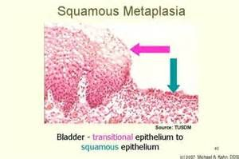
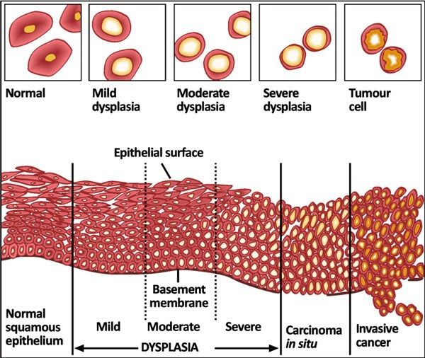
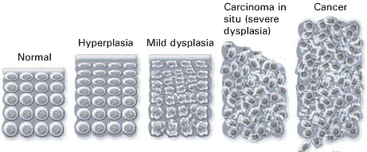
3.3 · Objectives c & k — Neoplasia and histological grading
A neoplasm is an abnormal mass of tissue growing autonomously — self-perpetuating without physiologic growth stimuli. That single word is what separates it from hyperplasia, which stops when the stimulus stops. The entire proliferating population is derived from one cell that underwent a genetic alteration, so a tumour is a clone. It has two components: parenchyma, the proliferating neoplastic cells, and stroma, the connective tissue and blood vessels supporting them. Neoplasm and tumor are interchangeable.
Cancer is a malignant neoplasm. The word comes from the Latin for crab, because it “adheres to any tissue that it seizes upon” and reaches out with claws into surrounding tissue. A metastasis is the portion of a cancer that has migrated from the primary site to other sites.
| Grade | Resemblance to the normal cell |
|---|---|
| Well differentiated | Close resemblance |
| Moderately differentiated | Intermediate resemblance |
| Poorly differentiated | Poor resemblance |
| Anaplasia | Lack of differentiation |
| Benign tumour | Malignant tumour | |
|---|---|---|
| Border | Well circumscribed | Ragged, not easily discernable |
| Relation to tissue | Compresses surrounding tissue | Infiltrates and invades it |
| Capsule | Often has a fibrous capsule | — |
| Differentiation | Usually well differentiated | Various degrees |
| Metastasis | Does not metastasize | May metastasize |
| Growth | Slow | Rapid |
Histologically, four features move a tumour along that spectrum: pleomorphism, abnormal nuclei, mitoses, and abnormal differentiation.
Why does a tumour outgrow normal tissue? The deck answers it from stem cell kinetics. A stem cell has unlimited self-renewal and cellular immortality but a relatively low rate of proliferation; once a cell commits to differentiation, proliferation can be dramatic, but those differentiated cells have a limited life-span. Abnormal differentiation in cancer puts a greater percentage of cells in the proliferative pool at the expense of the maturation pool, so the mass grows through a higher proliferative fraction AND a lower rate of cell loss — both halves, not just faster division. The deck is careful to call the cancer stem cell idea a conceptual framework rather than an absolute explanation.
3.4 · Objective d — Routes of tumour spread
| Route | Mechanism | Where it goes |
|---|---|---|
| Haematogenous | Cells separate from each other and degrade intercellular tissue with enzymes; cells invade the vessel; multiple tumour fragments travel | Typically through veins — especially the portal vein and the inferior vena cava, so cancers often spread to liver and lungs respectively. One organ may carry several nodules |
| Lymphatic | Cancer spreads into lymphatic vessels at the tumour margin | Follows the natural route of lymphatic drainage — which is why nodal staging is anatomically predictable |
| Seeding | Invasion of tumour through an organ surface into a cavity | Pericardial, pleural, peritoneal cavities, joint cavities, and the subarachnoid space. Most commonly the peritoneal cavity |
A cavity here is defined by the membrane covering the organs in it and the membrane covering the cavity wall — pericardium, pleura and peritoneum over heart, lungs and abdominal organs respectively.
3.5 · Objectives e & f — Classifying tumours by origin
This is a naming rule, and once you have it, every tumour name in medicine decodes. Two origins, and a suffix for each.
| Origin | Benign | Malignant |
|---|---|---|
| Mesenchymal — supportive tissue: connective tissue, adipose, cartilage, smooth and striated muscle, bone | Named for the tissue | Sarcoma |
| Epithelial, glandular pattern or from a gland | Adenoma — sometimes secretes the hormone of its gland of origin | Adenocarcinoma |
| Epithelial, squamous differentiation | — | Squamous cell carcinoma |
| Epithelial surface, finger-like projections | Papilloma — visible “finger-like” or warty projections, microscopically or macroscopically | — |
3.6 · Objectives g & h — Gene alterations and chemical carcinogenesis
Carcinogenesis is a multistep process resulting from damage to multiple normal regulatory genes. Those genes may be inherited and/or damaged by chemical carcinogens, ultraviolet and ionizing radiation, or microbial organisms — viruses and a bacterium.
| Category | Normal job | What goes wrong | Examples |
|---|---|---|---|
| Protooncogenes | Promote regulated cell growth — growth factors, growth factor receptors, nuclear regulatory proteins, signal transduction proteins | Mutation converts them to oncogenes, encoding oncoproteins that promote continued uncontrolled growth | — |
| Tumour suppressor genes | Inhibit cell growth | Loss removes a brake | NF-1, NF-2, RB, APC |
| Repair genes | Promote repair of damaged deoxyribonucleic acid | Loss lets mutations accumulate | BRCA-1, BRCA-2 |
| Apoptosis genes | Cause cells with damaged deoxyribonucleic acid to self destruct | Loss lets damage be continued in dividing cells and become permanent | — |
Chemical carcinogenesis has two named steps. Initiation, caused by initiators: chemicals cause permanent damage to deoxyribonucleic acid. Promotion, caused by promoters: sustained or enhanced proliferation of cells already damaged by an initiating agent, raising the risk of successive mutations.
| Agent | Source | Cancer |
|---|---|---|
| Polycyclic aromatic hydrocarbons | Combustion of tobacco | Bladder and lung — among the most powerful carcinogens known |
| Aromatic amines | Occupational exposure | Classically emphasised in occupational bladder cancer |
3.7 · Objective i — Microorganisms and carcinogenesis
Five organisms, and they divide into two mechanisms. Either the microbe directly disables a tumour suppressor, or it causes chronic inflammation with repeated regeneration and lets mutations accumulate. Sorting them that way turns five facts into two ideas.
| Organism | Cancer | Mechanism |
|---|---|---|
| Human papillomavirus types 16 and 18 | Cervical cancer; also anal, vulvar, vaginal, penile, and oropharyngeal squamous cell carcinoma | Direct. Integrates its viral deoxyribonucleic acid into the host genome, causing excessive E6 and E7. E6 blocks p53 (needed to promote self destruction of mutated cells); E7 blocks RB (needed to inhibit cell growth) |
| Epstein Barr virus | Certain B cell lymphomas and nasopharyngeal carcinoma | Direct. Infects B lymphocytes and “immortalizes” them; also infects oropharyngeal epithelial cells. In normal immune function this does not happen — the patient is asymptomatic or has self-limited infectious mononucleosis |
| Hepatitis B virus | Hepatocellular carcinoma | Both. Chronic infection and injury → continuous regenerative attempts → cells at risk of mutation. AND it encodes a protein that binds p53. Emphasises: chronic inflammation, regenerative hyperplasia, genomic instability |
| Hepatitis C virus | Hepatocellular carcinoma | Inflammatory. Chronic hepatitis → repeated cycles of cell death and proliferation. Most arises in cirrhosis, though cancer can occasionally occur without it |
| Helicobacter pylori the one bacterium | Gastric adenocarcinoma and MALT lymphoma (mucosa-associated lymphoid tissue) | Inflammatory. Gram-negative, colonizes the stomach → chronic gastritis → atrophic gastritis and intestinal metaplasia. Chronic inflammation raises epithelial turnover and the chance of mutation |
And the inflammatory mechanism has a testable consequence: eradicating Helicobacter pylori can reduce the risk of gastric cancer and may induce regression of some early MALT lymphomas. That is the cleanest evidence in the lecture that the chronic inflammation is doing the carcinogenic work.
Radiation gets its own short slide: ultraviolet radiation — UVB — and ionizing radiation.
3.8 · Objective j — Heredity and carcinogenesis
Inherited cancer risk comes through the same gene categories, just present from birth.
| Category | Gene | Disease |
|---|---|---|
| Tumour suppressor alterations | Rb protein | Retinoblastoma (rare childhood eye tumour) and osteosarcoma |
| NF-1 and NF-2 | Neurofibromatosis types 1 and 2 — a variety of central and peripheral nervous system tumours | |
| p16 (INK4a) | Malignant melanoma | |
| APC | Familial adenomatosis polyposis — 500 to 2500 premalignant adenomatous polyps in the teens and twenties; colon cancer by age 50 | |
| Repair gene alterations | BRCA-1, BRCA-2 | A minority of breast cancer patients carry an inherited mutation |
| Defective repair genes | Xeroderma pigmentosum — cannot repair mutations caused by UVB; increased skin cancer in sun-exposed areas | |
| Apoptosis gene alterations | — | Inherited failure to make mutated cells self destruct, so mutations propagate |
3.9 · Objective l — TNM staging
Staging has three purposes: it indicates the extent of spread within the patient, it determines prognosis, and it guides management. It is based on three things, which are exactly the three letters: the size of the primary lesion, the extent of spread to regional lymph nodes, and the presence or absence of blood-borne metastases.
| Letter | Category | Meaning |
|---|---|---|
| T — primary lesion | Tis | Lesion has not invaded through the tissue basement membrane; is = in situ |
| T1–T3 or higher | Increasing size of the primary lesion; increasing depth of invasion | |
| N — regional nodes | Nx | Regional lymph nodes cannot be assessed |
| N0 | No regional lymph node metastasis | |
| N1, N2 or higher | Involvement of increasing number and range of lymph nodes | |
| M — metastasis | Mx | Distant metastasis cannot be assessed |
| M0 | No distant metastasis | |
| M1 | Distant metastasis present |
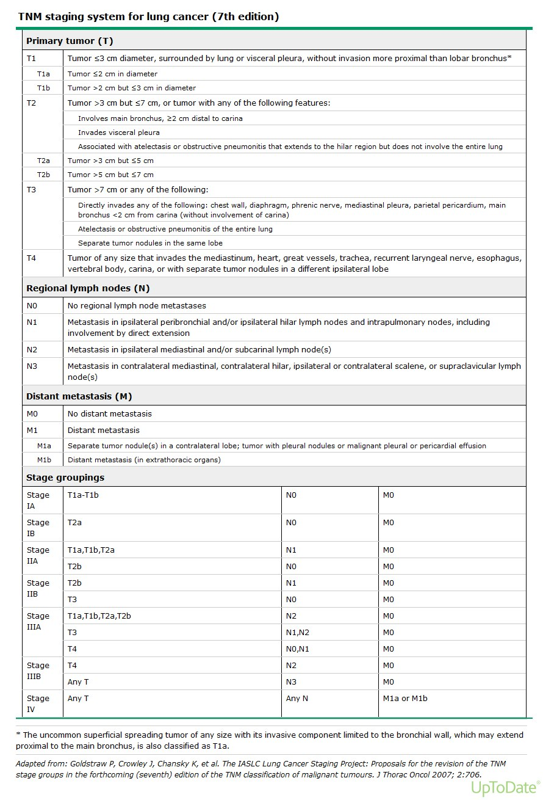
4 · Ophthalmic Pathophysiology
Instructional Objectives
Ophthalmic Pathophysiology
- Compare and contrast the neurological anatomy of the eye
- Describe the physiological processes of vision
- Describe the molecular mechanisms of common ocular pathologies
- Compare and contrast the conditions caused by abnormal shapes of the eye
- Compare and contrast the conditions of the eye that are age related
- Describe the pathogenesis of glaucoma
- Describe the pathogenesis of cataracts
- Compare and contrast the pathogenesis of retinal detachment
- Describe the pathologic process of macular degeneration
- Describe visual field deficits according to the area of pathology
In the last two minutes of the 26 August lecture the guest lecturer said “This is for the test” and named these:
- Cataracts
- Macular degeneration — “what we just talked about”
- The visual pathway — “know those areas of changes in your visual pathway, what would cause a particular visual change”
- Refraction errors
- Retinal detachment — “the different things that can cause retinal detachment”
- Glaucoma — specifically “what’s the pathophysiological explanation for vision loss there?”
- Presbyopia — volunteered after he had said “that’s it”, so he went back for it deliberately
He also cut scope twice on the visual fields: “these I wouldn’t worry about that much … this is getting more into neurology, which we’ll see later … know these better: optic nerve damage, optic chiasm damage, optic tract damage” and “D and E, you can know that if you want, but know A, B and C.”
And he de-emphasised lens correction: “not that important, concave and convex for my purposes. More important is knowing the difference between myopia, hyperopia, and the globe shape.” He then contradicted himself on which lens does what and corrected mid-sentence, so trust the slide, not the sentence — and expect the geometry, not the lens.
4.1 · Objectives a & b — Anatomy and the physiology of vision
Five things make the eye unusual, and each one explains a disease later in this lecture. The cornea is avascular, oxygenated by direct contact with air and tears, and about seventy per cent of refraction depends on it — which is why corneal disease blurs vision so completely. The retina has the highest oxygen consumption and metabolic rate of any tissue, higher than cerebral cortex, which is why it tolerates ischaemia so badly. And the eye is the only place in the body where live neural tissue and native microcirculation can be seen directly, without cutting anything.
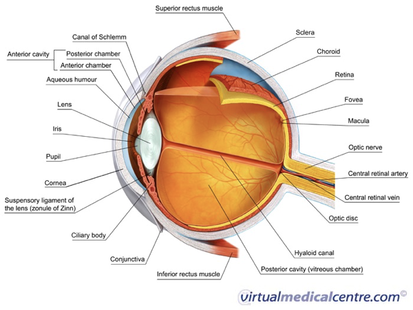
The three tunics, outside in:
| Tunic | Structures | Role |
|---|---|---|
| Fibrous (outer) | Sclera, cornea | Protective white coat; clear avascular refracting window |
| Uvea (vascular, middle) | Choroid, ciliary body, iris | Choroid nourishes the retina; ciliary body makes aqueous and drives accommodation; iris sets pupil size |
| Retina (neurosensory, inner) | Photoreceptors, interneurons, ganglion cells | Converts light to neural signal |
Vision needs three things and will fail if any one is lost: image formation (light refracted by cornea and lens onto the retina), photoreceptor excitation (photons make rods and cones fire hyperpolarising potentials), and neural transmission (optic nerve to occipital cortex).
Rods, about 120 million, are high-sensitivity, for dim light and the peripheral retina. Cones, about 6 million, carry colour and sharp acuity and are concentrated in the fovea centralis within the macula. Beneath them the retinal pigment epithelium does three jobs — absorbs scattered light, phagocytoses spent photoreceptor outer segments, and maintains the blood-retinal barrier. Signals pass through bipolar, horizontal and amacrine interneurons to the ganglion cells, whose axons become the optic nerve. The optic disc is the blind spot because it has no rods or cones.
Fluid mechanics. Aqueous humour is made continuously by the non-pigmented epithelium of the ciliary body into the posterior chamber, flows through the pupil into the anterior chamber nourishing the avascular lens and cornea, and drains trabecular meshwork → canal of Schlemm → episcleral veins. That drainage route is the whole of glaucoma. Behind the lens, vitreous humour — water, type two collagen, hyaluronic acid — acts as a shock absorber pressing the retina against the pigment epithelium. Its age-related liquefaction is the whole of rhegmatogenous detachment.
4.2 · Objectives d & e — Globe shape, and the age-related conditions
Refraction errors and presbyopia are both on his list. Learn them as geometry, not as lens prescriptions.
| Error | Geometry | Where the image lands | What is preserved |
|---|---|---|---|
| Myopia (near-sighted) | Axial globe too long | In front of the retina | Near vision |
| Hyperopia (far-sighted) | Axial globe too short | Behind the retina | Distance vision |
| Astigmatism | Irregular corneal or lens curvature | Non-spherical focal points — no single focus anywhere | Nothing is fully sharp |
| Presbyopia | Lens sclerosis, loss of elasticity | Cannot change shape to focus near | Distance vision |
Astigmatism can stack on top of myopia or hyperopia, adding an axis error to a focal-length error, which is why it blurs the whole field rather than one distance.
Presbyopia is the one he came back for. The lens is normally elastic; with age it hardens, so the ciliary muscle can no longer change its shape — that is what “cannot accommodate” means. He tied it to the A in PERRLA — Pupils Equal, Round, Reactive to Light and Accommodation — and quizzed the room on what the A stands for.
Strabismus versus amblyopia is a mechanical problem against a developmental one. Strabismus is misalignment — the visual axes fail to land on corresponding retinal points — from extraocular muscle imbalance or a third, fourth or sixth nerve palsy; subtypes are esotropia (in), exotropia (out), hypertropia (up), hypotropia (down). Amblyopia is reduced best-corrected acuity from abnormal visual processing during the critical developmental period, caused by uncorrected strabismus, severe refractive error, or deprivation from congenital cataract or ptosis. The treatment window closes at seven to eight years because that is when the visual system stops being plastic.
4.3 · Objective g — Cataract
Named first on his list, and the deck's own objective slide says “describe the pathogenesis”. Learn the four mechanisms, not just the word.
A cataract is opacification of the crystalline lens. Four routes to it:
| Cause | Mechanism |
|---|---|
| Senile (commonest) | Progressive insoluble aggregation of lens crystallin proteins |
| Metabolic — diabetes | Excess glucose converted to sorbitol → osmotic swelling of the lens |
| Drugs and trauma | Chronic corticosteroids; blunt or penetrating injury rupturing the lens capsule |
| Congenital and environmental | Down syndrome; excess ultraviolet radiation and oxidative damage |
Presentation: gradual, painless, bilateral blurring; glare around headlights at night; monocular diplopia; altered colour perception. On examination: loss of the normal red reflex, with a white opacity through the pupil (leukocoria) when severe. Usually peripheral in the lens, but a nuclear cataract is often post-traumatic.
4.4 · Objective f — Glaucoma
He asked for one thing specifically: “What’s the pathophysiological explanation for vision loss there?” The answer is the chain below — pressure, axon compression, ganglion cell apoptosis, cupping.
The hallmark: raised intraocular pressure compresses retinal ganglion cell axons at the disc → ganglion cell apoptosis → progressive optic disc cupping, an increased cup-to-disc ratio above 0.5. The vision loss is nerve loss, not media opacity — that is the whole answer to his question.
| Primary open-angle | Primary angle-closure | |
|---|---|---|
| Angle | Open | Anatomically narrowed |
| Mechanism | Microscopic resistance in the trabecular meshwork impairs outflow | Mydriasis displaces the iris forward against the cornea (iris bombé), blocking outflow completely |
| Onset | Insidious, painless, bilateral | Acute, pressure spiking above 50 mmHg |
| Symptoms | Asymptomatic until severe peripheral loss — “tunnel vision” | Severe eye pain, headache, halos, cloudy cornea, fixed mid-dilated pupil, nausea and vomiting |
This deck disagrees with itself on normal intraocular pressure. Slide 24 says 10–21 mmHg; slide 25, two slides later, says “about 6–19 mmHg”. Prof. Beck's Physical Diagnosis 2 ocular deck independently gives 10–21, so 6–19 looks like the slip — but nothing here is graded on that value. What is not in dispute is the acute spike above 50.
4.5 · Objectives h & i — Retinal detachment and macular degeneration
Both are on his list, and for detachment he asked specifically for “the different things that can cause retinal detachment” — so learn the three mechanisms, not just the presentation.
Why age matters first: the vitreous is gel-like in youth and liquefies with age — the lecturer's analogy was jelly left in the fridge, separating into a liquid layer over a solid one. Liquefied vitreous is what can pass through a break.
| Type | Mechanism | Causes |
|---|---|---|
| Rhegmatogenous | Full-thickness tear lets liquefied vitreous into the subretinal space, peeling the retina off the pigment epithelium | Posterior vitreous detachment, age, severe myopia, trauma, lattice degeneration |
| Tractional | Proliferative fibrovascular membranes on the retinal surface physically pull it off | Proliferative diabetic retinopathy; prior trauma, surgery or vitrectomy scarring |
| Exudative (serous) | Subretinal fluid accumulates with no tear and no traction — blood-retinal barrier breakdown | Severe malignant hypertension, sarcoidosis, choroidal melanoma |
Rhegmatogenous symptoms: flashing lights (photopsia), a shower of floaters, then a curtain falling across the field.
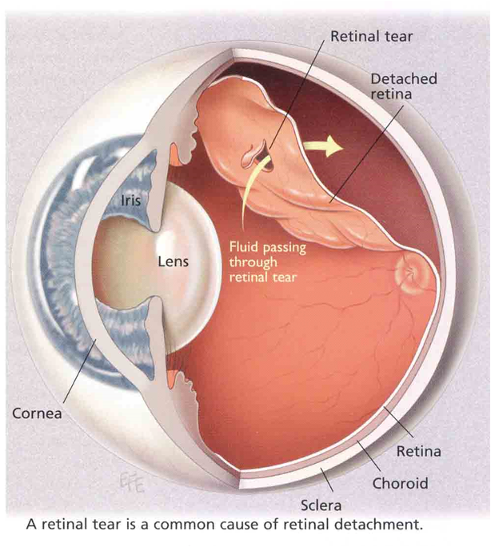
Macular degeneration is the leading cause of new-onset blindness in United States adults over 75. The deck is explicit that the pathogenesis is unknown for both forms.
| Dry (atrophic) | Wet (exudative, neovascular) | |
|---|---|---|
| Process | Slow bilateral degeneration of photoreceptors, pigment epithelium and choroid | Choroidal neovascularisation — hypoxia and inflammation drive new vessels beneath the pigment epithelium into the subretinal space |
| Hallmark | Drusen — discrete yellow extracellular debris (lipofuscin, apolipoproteins) beneath the pigment epithelium and Bruch membrane | Leaking vessels, blood and serous fluid |
| Course | Slow loss of central detail; metamorphopsia and scotoma | Rapid central loss, disciform scarring, detachment |
| Share of severe blindness | — | ~90 per cent |
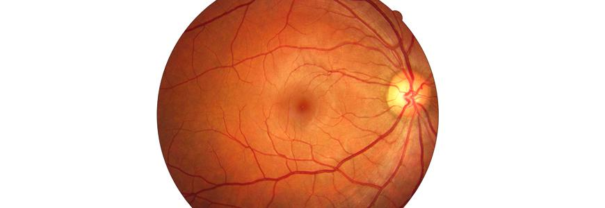
Diabetic retinopathy is the leading cause of new-onset blindness in United States adults 20 to 74 — a different age band from macular degeneration, and an easy pair to swap. Chronic hyperglycaemia damages capillaries and endothelial basement membranes → capillary occlusion and hypoxia. Non-proliferative: dilated veins, microaneurysms, dot and blot haemorrhages, hard exudates (lipid in the outer plexiform layer), cotton-wool spots (nerve fibre layer ischaemia), macular oedema. Proliferative: severe ischaemia upregulates vascular endothelial growth factor → neovascularisation on disc and retina → vitreous haemorrhage, fibrotic traction, tractional detachment.
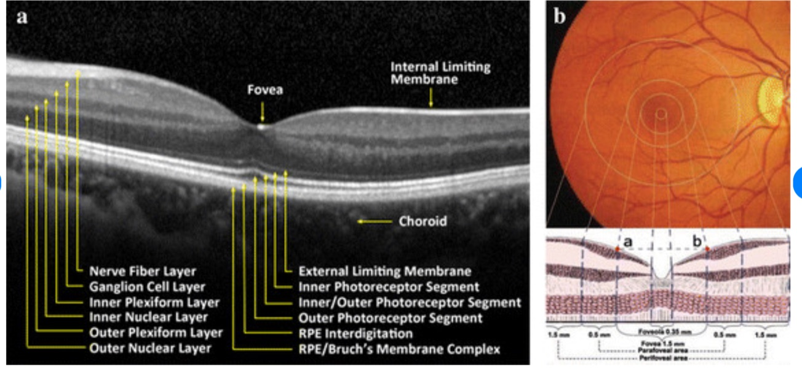
4.6 · Objective j — Visual field deficits by lesion site
On his list — “know those areas of changes in your visual pathway, what would cause a particular visual change” — but scoped. He said twice to know A, B and C. D and E he deferred: “this is getting more into neurology, which we’ll see later.” He also said “memorise this: optic nerve, optic chiasm, optic tract.”
The decussation is the key. Nasal retinal fibres — which carry the temporal visual fields — cross at the chiasm. Temporal retinal fibres stay ipsilateral. Everything below follows from that one fact. The pathway runs optic disc → optic nerve → chiasm → optic tract → lateral geniculate nucleus → optic radiation → occipital cortex.
| Site | Lesion | Cause | Field defect |
|---|---|---|---|
| A | Ipsilateral optic nerve | Trauma, optic neuritis, ischaemic optic neuropathy | Monocular blindness |
| B | Optic chiasm (centre) | Pituitary adenoma compression | Bitemporal hemianopsia — only the crossing nasal fibres are cut, so both temporal fields go |
| C | Optic tract / lateral geniculate | Stroke, tumour, demyelination | Contralateral homonymous hemianopsia |
| D | Temporal optic radiation | Temporal lobe lesion or surgery | Contralateral superior quadrantanopsia — “pie in the sky” |
| E | Occipital cortex | Posterior cerebral artery occlusion | Contralateral homonymous hemianopsia with macular sparing (dual supply) |
D and E are greyed because he deferred them to neurology. They are on the slide, so they are here — but A, B and C carry the weight.
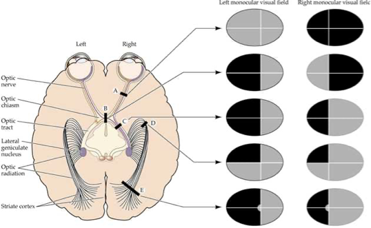
One more consequence he drew out: losing vision in one eye costs the binocular overlap, and with it depth perception. Everything becomes flat.
5 · ENT Pathophysiology
Instructional Objectives
ENT Pathophysiology
- Review the anatomy of the ear, nose, neck and throat system.
- Review the ear, nose, neck, and throat pathology.
- Describe the molecular mechanisms of common disorders of ear, nose, neck, and throat.
- Differentiate the pathogenesis of vertigo and dizziness.
- Compare and contrast the pathophysiological processes of hearing deficits.
Vertigo is the weighted topic and he said so outright. At [25:28]: “if you understand the etiology of vertigo versus dizziness, like any different types of vertigo, remember those things, because I think on my board exams, a third of my neurology questions were vertigo related. So know this, know these things.” Four peripheral causes, and they separate on three axes only: how long the vertigo lasts, whether hearing goes with it, and whether a virus came first.
He also narrowed it: “We are more interested for this lecture on peripheral vertigo” [29:19]. Central vertigo is here so you can exclude it.
And he cut scope twice. The otitis media organisms are “not really for my exam, but like board exams” [23:27]. Allergic rhinitis is “plain vanilla … I don’t wanna ask about this” [39:48]. Both are still on the slides and both are still on PANCE, so neither has been removed — but if you are triaging the night before, they go last.
5.1 · Objectives 1 & 3 — Anatomy and auditory transduction
The ear is three compartments with three different jobs, and almost every disease in this lecture is a failure of one of them. The external ear — auricle and canal — captures and concentrates acoustic waves and localises sound; ceruminous glands line it and the outer third carries protective hair follicles. The middle ear is air-filled, which is the single fact that makes otitis media and Eustachian tube dysfunction make sense: the tympanic membrane vibrates, the malleus, incus and stapes amplify, and the Eustachian tube equalises pressure. The inner ear holds the cochlea, which converts fluid displacement into neural signal at the organ of Corti, and the vestibule and semicircular canals, which hold dynamic rotational equilibrium.
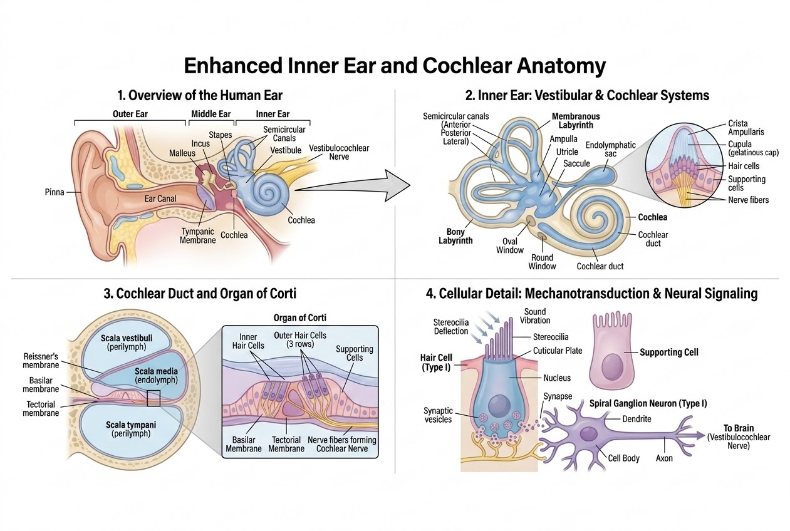
The transduction chain, in the order the slide gives it. Follow it once and four later diseases become obvious:
- Stapes vibration at the oval window generates pressure waves in the fluid-filled scala vestibuli, displacing endolymph in the cochlear duct.
- Shearing force. Basilar membrane displacement bends the stereocilia against the rigid tectorial membrane. The rigidity is the point — the cilia are bent because one end moves and the other does not.
- Ion depolarisation. That mechanical deflection opens tip-link channels, permitting rapid influx from endolymph into the hair cells.
- Neurotransmission. Depolarisation triggers voltage-gated channels, releasing glutamate onto cranial nerve VIII fibres.
Read that chain backwards and you have the map of hearing loss. Break step 1 and you get conductive loss. Break steps 2 to 4 and you get sensorineural loss. Nothing else in this lecture changes that division.
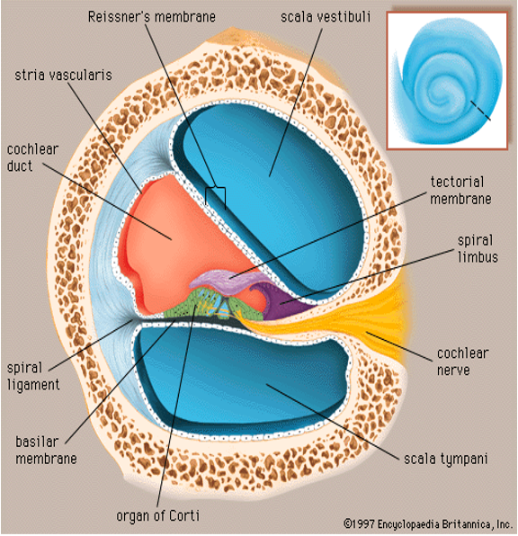
5.2 · Objective 5 — Conductive against sensorineural loss
| Parameter | Conductive hearing loss | Sensorineural hearing loss |
|---|---|---|
| Primary anatomic site | External or middle ear | Inner ear (cochlea), or cranial nerve VIII and central pathways |
| Pathophysiology | Defective sound wave transmission to the oval window | Destruction of hair cells or auditory nerve fibres |
| Weber tuning fork | Lateralises to the AFFECTED ear | Lateralises to the UNAFFECTED ear |
| Rinne tuning fork | Bone > air conduction (abnormal) | Air > bone conduction (normal ratio) |
| Common causes | Cerumen impaction, otosclerosis, otitis media, tympanic membrane perforation | Presbycusis, ototoxic drugs, noise trauma, acoustic neuroma |
The Weber result is the one people invert. It goes to the bad ear in conductive loss, which feels wrong until you see why: the blockage stops competing room noise from reaching that cochlea, so the bone-conducted tone has the ear to itself and sounds louder there. In sensorineural loss the cochlea itself is damaged, so the tone is simply heard better on the side that still works. He walked the class through both tests live [5:02–6:48]: Weber on top of the head, Rinne first at the ear and then on the mastoid.
Conductive loss has exactly four core mechanisms, and every cause on the slide is one of them. Learn the mechanism and the examples come free:
| Mechanism | What it does | Examples |
|---|---|---|
| 1. Obstruction | Physical blockage preventing sound penetrating down the canal | Impacted cerumen, foreign bodies, canal exostoses |
| 2. Mass loading | Fluid or tissue weight damping tympanic membrane and ossicular movement | Middle ear effusion, cholesteatoma |
| 3. Stiffness effect | Impaired mobility of the ossicles or the membrane | Otosclerosis (stapes footplate fixation) |
| 4. Discontinuity | Physical disruption of the ossicular chain | Temporal bone fracture, ossicular necrosis |
Two and three are the pair that get confused. Mass loading adds weight to a chain that can still move; stiffness stops the chain moving at all. Effusion damps; otosclerosis fixes.
Cholesteatoma is not in the deck and he told the class to know it anyway [12:17]: “that’s not in this presentation, but you should know about it … a cholesterol collection that forms like a small mass in the ear. Usually it needs to be surgically removed.” It sits under mass loading.
5.3 · Otosclerosis
Pathogenesis: abnormal osteoclastic bone resorption followed by hypervascular spongy osteoid replacement around the otic capsule and the stapes footplate. Resorption first, then the wrong bone grows back in its place.
The clinical pearl is one event: ankylosis of the stapes footplate in the oval window halts mechanical vibration transfer, giving progressive conductive loss. The cochlea is untouched, which is why this is conductive rather than sensorineural — it is mechanism 3, stiffness.
Demographics and inheritance, which he flagged at [16:16] as the thing to remember: commonest in young-to-middle-aged females, accelerated by pregnancy, and 50% autosomal dominant with variable penetrance.
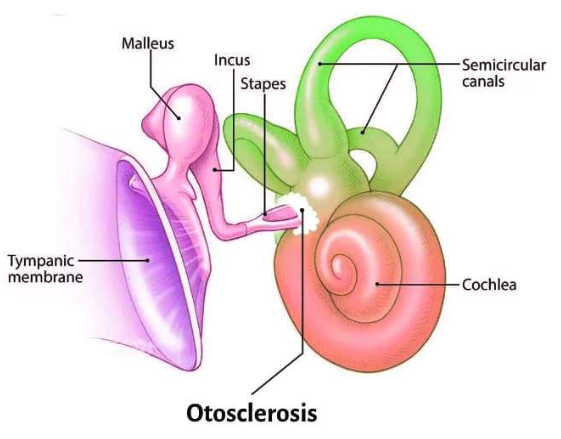
5.4 · Ototoxicity and noise
He gave the organising rule before the detail [16:34]: “Ototoxic medications, almost always reversible, except for some like platinum chemotherapy.” Sort the four drug groups by whether the damage stays.
| Agent | Molecular mechanism | Result |
|---|---|---|
| Aminoglycosides gentamicin, tobramycin | Induce reactive oxygen species that selectively destroy outer hair cells starting at the cochlear base | Permanent; high pitch lost first |
| Platinum chemotherapy cisplatin, carboplatin | Cross-links DNA in stria vascularis cells, compromising endolymph ion homeostasis | Bilateral, permanent sensorineural loss |
| Loop diuretics furosemide | Alters the stria vascularis potential | Reversible conductive or sensorineural loss |
| Salicylates | Inhibits the prestin motor protein in outer hair cells | Tinnitus |
Why high frequencies go first is anatomical, not chemical. The base of the cochlea encodes high pitch, and the base is where the aminoglycoside damage starts. The same geometry explains presbycusis, which is why the two sound alike on an audiogram.
Two drugs hit the same structure with opposite outcomes. Cisplatin and furosemide both act on the stria vascularis — the strip of tissue that maintains endolymph. One cross-links its DNA and kills it; the other only shifts its electrical potential. That is the whole of why one is permanent and one is not.
Noise. Long-term chronic exposure above 85 decibels induces irreversible stereocilia degeneration and acoustic hair cell apoptosis. The deck's ladder, with what he added aloud at [9:01]:
| Sound | Level | Consequence |
|---|---|---|
| Quiet whisper | 30 dB | — |
| Normal speech | 60 dB | — |
| Hazard threshold | 85 dB | Occupational limit — chronic exposure above this is where irreversible damage begins |
| Lawnmower, traffic | 90 dB | Cumulative risk |
| Ambulance siren | 120 dB | Acoustic trauma |
| Jet engine, blast | 140 dB | Immediate damage |
Presbycusis is gradual, symmetrical, bilateral sensorineural loss in older adults. Its frequency curve begins with high-frequency tones — the speech consonants /s/, /f/, /t/ — which is why the complaint is never “I cannot hear” but “I cannot follow conversation in a noisy room”. Vowels carry the volume; consonants carry the meaning, and it is the consonants that go.
5.5 · Otitis media and otitis externa
Otitis media usually begins with Eustachian tube dysfunction, and the sequence is mechanical: failure of the tube to open periodically → absorption of oxygen and nitrogen into the middle ear mucosa → negative middle ear pressure. The air-filled middle ear is a sealed box whose only vent has stopped working; the mucosa takes up the gas and the pressure drops. Effusion follows, and the membrane bulges once fluid accumulates [23:06].
| Otitis media | Otitis externa (“swimmer’s ear”) | |
|---|---|---|
| Bacterial | Streptococcus pneumoniae, Haemophilus influenzae, Moraxella catarrhalis | 80–90% of cases: Pseudomonas aeruginosa, Staphylococcus aureus |
| Other organisms | Viral: respiratory syncytial virus, rhinovirus, influenza, adenovirus | Fungal: Aspergillus niger, Candida albicans |
| Predisposing | Eustachian tube dysfunction, preceding upper respiratory infection | Fungal form follows prolonged antibiotic use or hyperhumid conditions |
The fungal trigger is worth a second look, because it is the same logic as thrush: clear the bacteria with a long antibiotic course, or keep the canal permanently wet, and the fungus has no competition.
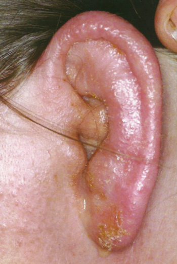
5.6 · Objective 4 — Equilibrium, and vertigo against dizziness
Two separate detectors, and they answer different questions:
| Organ | Detects | How |
|---|---|---|
| Semicircular canals (three loops — sagittal, coronal, transverse) | Rotational acceleration of the head | Endolymph inertia bends the gelatinous cupula inside the ampulla, stimulating hair cell stereocilia |
| Otolith organs — utricle (horizontal), saccule (vertical) | Linear acceleration and gravitational position | Static and linear balance |
Canals answer “am I turning?”; otoliths answer “which way is down?” Keep them apart, because benign paroxysmal positional vertigo is precisely a failure of the otolith organs that produces a canal symptom.
Now the distinction the objective actually asks for:
| Vertigo | Dizziness / lightheadedness | |
|---|---|---|
| What it is | Hallucination of motion — spinning, tilting, tumbling | Non-vestibular sensation of impending faint or unsteadiness |
| Mechanism | Asymmetrical sensory input in the vestibular system | Cerebral hypoperfusion (presyncope), orthostatic hypotension, metabolic imbalance |
| Accompanied by | Nystagmus and ataxia. NO syncope | Faintness — syncope is on the table |
“NO syncope” is the discriminator the deck puts in capitals, and it is the cleanest one you have. Vertigo is a false signal of motion; the brain is perfused normally, so the patient does not faint. Dizziness is a perfusion or metabolic problem, so fainting is exactly what is threatened. The word the patient uses tells you nothing — both arrive as “dizzy”.
| Peripheral vertigo | Central vertigo | |
|---|---|---|
| Site | Inner ear or cranial nerve VIII | Brainstem or cerebellum |
| Onset | Sudden | Gradual |
| Nystagmus | Prominent horizontal or rotational; fatigable; suppressed by visual fixation | Vertical or non-suppressible |
| Other signs | — | Neurological deficits present |
| Causes | Benign paroxysmal positional vertigo, Ménière, labyrinthitis, vestibular neuritis | Brainstem stroke, multiple sclerosis, cerebellar tumour |
Visual fixation is the bedside test and he explained why it works [29:38]: “by fixing view … you’re overriding the vestibular function telling you that things are moving. You’re actually helping a person to kind of calm the vertigo down. You can do that with peripheral vertigo. You cannot do that with central.” A peripheral lesion sends a false signal that vision can outvote; a central lesion has broken the machinery that does the voting.
5.7 · The four peripheral vertigos
This is the highest-yield table in the lecture. Read down the duration column first — seconds, hours, days — then check hearing.
| Mechanism | Duration | Hearing loss | The giveaway | |
|---|---|---|---|---|
| Benign paroxysmal positional vertigo | Canalithiasis — dislodged otoconia in the semicircular canals | Under 1 minute | NONE | Triggered by positional change of the head |
| Ménière disease | Endolymphatic hydrops — defective endolymph resorption | Hours | Progressive, low-tone | Aural fullness and fluctuating low-frequency tinnitus |
| Labyrinthitis | Inflammation of canals and cochlea | Days, improving over weeks | Unilateral sensorineural | Recent viral upper respiratory infection |
| Vestibular neuritis | Inflammation of the nerve fibres only | Days | None — the cochlea is not involved | Labyrinthitis without the hearing loss |
Vestibular neuritis is not on a slide of its own and he explained why [32:32]: “Labyrinthitis … is just an inflammation of the entire inner ear. Remember I said there’s another thing called vestibular neuritis? That’s just the same thing, but just inflammation of the nerve fibres. That’s the only difference.” One lesion in two places: hit the whole labyrinth and hearing goes with balance; hit the nerve alone and only balance goes.
Ménière disease — endolymphatic hydrops. Defective endolymph resorption leads to excessive fluid accumulating in the membranous labyrinth, ballooning the scala media until micro-ruptures occur. Production is normal; drainage is not. The episodic pattern follows directly from the micro-ruptures — pressure builds, the membrane gives way, symptoms fire, pressure re-equilibrates, and the cycle restarts.
He called the tetrad out by name at [31:36] — “Classic symptom, tetrad” — and said of the disease at [32:26] that it is “something you’ll be tested on … for sure.”
- Episodic vertigo, sudden, hours-long
- Low-frequency fluctuating tinnitus
- Progressive low-tone sensorineural hearing loss
- Aural fullness or pressure in the affected ear
Note which way the frequencies run. Ménière takes the low tones; presbycusis and aminoglycosides take the high ones. That single contrast separates hydrops from every other sensorineural loss in this lecture.
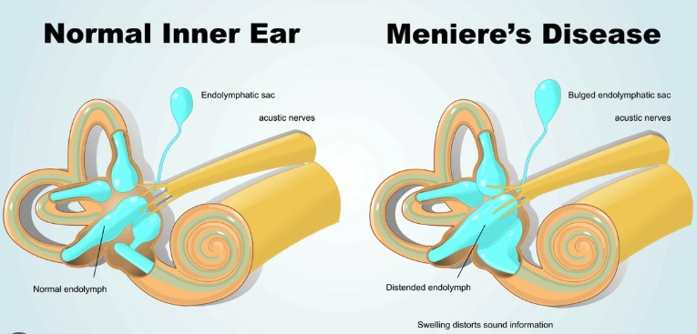
Labyrinthitis — otitis interna. Inflammatory swelling, vascular congestion and endolymphatic disruption within the semicircular canals and the cochlea produce a sudden, concurrent impairment of both balance and hearing. Cause: viral infection, recent viral upper respiratory infection. Hearing and balance fail together for a purely anatomical reason — one continuous fluid space serves both organs, so inflammation anywhere in it disturbs both.
Its features: unilateral tinnitus in the affected ear, unilateral sensorineural hearing loss, and horizontal-rotary nystagmus with the fast phase beating AWAY from the affected side, with severe postural instability, gait ataxia and nausea.
Slide 17 calls the vertigo of labyrinthitis “episodic”. It is continuous, and he corrected his own slide aloud, twice.
At [33:05] and again at [34:17]: “this is not episodic vertigo. I don’t know, I did write that. So this is not episodic. This is continuous vertigo … Classic symptoms is continuous, not episodic vertigo.”
Answer continuous. And notice what the correction protects: episodic vertigo lasting hours is Ménière. If labyrinthitis were episodic too, the two would be indistinguishable on the axis that separates them. The vertigo of labyrinthitis is continuous, lasting days, improving slowly over weeks.
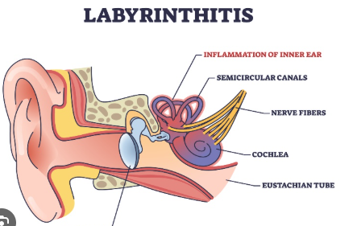
Benign paroxysmal positional vertigo — canalithiasis. Otoconia, the crystals that normally sit in the utricle, become dislodged into the semicircular canals. Asked in the room how that happens, he scoped the answer for this course [36:43–37:16]: ageing, “no one really knows exactly … but what you need to know for pathophysiology is that they can become loose. And when they come loose and they’re floating around in the endolymph, they can hit structures and cause the sensation of movement, of motion.”
Which explains all three of its features at once: episodes under a minute (the crystals settle), triggered by positional change of the head (they only move when gravity moves them), and NO hearing loss (the cochlea is nowhere near this). No hearing loss is the discriminator — it is the one peripheral vertigo that leaves hearing alone, apart from vestibular neuritis.
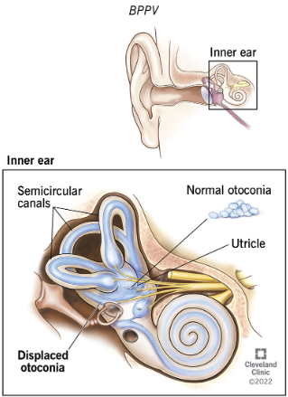
5.8 · Rhinology
Rhinitis is the nose; rhinosinusitis is the nose and the sinuses [37:39]. Duration then splits it:
| Definition | Cause | Presentation | |
|---|---|---|---|
| Acute rhinosinusitis | Under 4 weeks | Usually viral (rhinovirus, influenza); or secondary bacterial — Streptococcus pneumoniae, Haemophilus influenzae | Purulent rhinorrhoea, facial pain, nasal congestion |
| Chronic rhinosinusitis | Beyond 12 weeks despite therapy | Often a secondary infection layered on an allergic process | Often with nasal polyps |
| Allergic rhinitis | Not classified by duration | IgE-mediated type 1 hypersensitivity of nasal mucosa to inhaled allergens | CLEAR rhinorrhoea, nasal itching, sneezing, boggy turbinates, allergic “shiners” |
Discharge colour is the fastest discriminator and he opened the section with it [37:26]: allergic rhinitis gives clear discharge, acute bacterial sinusitis gives purulent discharge. Facial pain localises to the sinuses, which is why it belongs to rhinosinusitis and not to rhinitis.
He was also honest about the gap in the definitions [37:54]: “I always wonder, so what’s the in-between? … What if it’s seven weeks?” Four to twelve weeks is unclassified, and in practice means either a second acute episode or an untreated allergy underneath.
Nasal polyps. Non-neoplastic, benign oedematous masses arising from the mucous membranes of the sinus ostia or ethmoid air cells. Molecular pathway: chronic type 2 allergic responses, diffuse cytokine release — interleukins 4, 5 and 13 — and tissue eosinophil influx. Not neoplastic is the word that matters: no new tissue is being grown, the existing mucosa is waterlogged [40:28].
Slide 21 heads the polyp box “Type 2 Inflammation”. He stopped to fix it at [40:01]: “let me fix this too here … this type 2 inflammation is a T helper cell type 2 inflammatory process. Very important. I didn’t write it out, I put type 2, but I meant to put T helper cell type 2 allergic inflammation.”
He then took it straight back out of scope: “I’m not gonna ask you about that, but just so you know.” So: know what the heading means, do not expect to be asked it.
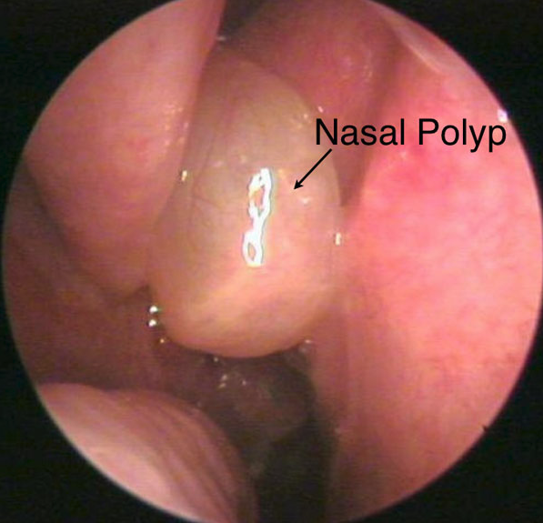
Turbinate hypertrophy is enlargement of the inferior nasal turbinates from venous sinusoid engorgement, mucosal oedema, or bony hypertrophy. Triggers: allergic rhinitis, vasomotor instability, and rebound hyperaemia from topical decongestants — rhinitis medicamentosa. Overuse of a decongestant spray produces the congestion it was bought to relieve [42:44].
Deviated septum. Displacement of nasal cartilage or bone off the midline divides the cavities into asymmetric flow channels, and the consequences all follow from airflow physics rather than from the deviation itself:
| Consequence | Mechanism |
|---|---|
| Unilateral resistance | Poiseuille’s law — even small airway narrowing dramatically increases resistance |
| Chronic nasal obstruction | Persistent mouth-breathing; aggravates sleep apnoea |
| Mucosal drying and epistaxis | Turbulent air currents cause localised crusting and fragile vessel breakdown |
| Olfactory dysfunction | Airflow fails to reach the superior nasal vault and cribriform plate |
| Compensatory hypertrophy | The contralateral wide cavity undergoes inferior turbinate enlargement to humidify the increased air volume |
| Sinus ostia blockage | Mucus stasis, hypoxia, secondary bacterial rhinosinusitis |
The compensation is the part that gets missed. The turbinate that hypertrophies is on the open side, not the blocked one — it is working harder, humidifying air the narrow side can no longer carry. So a patient can be obstructed on both sides from a one-sided deviation. He put the airflow split at “97% of all air coming into the nose going through one side” [45:23], and told the class to reverse the inference: when you find enlarged inferior turbinates, go looking for the septal deviation that caused them [42:22].
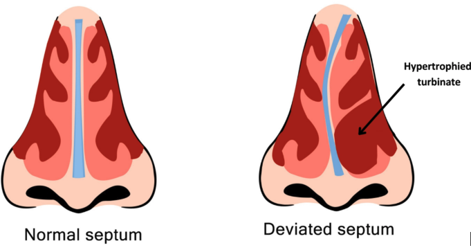
Epistaxis. Two bleeds, two vessels, two risk profiles. The management column on the slide belongs to Clinical Medicine and Surgery; what this course asks for is the vascular source and the aetiology.
| Feature | Anterior epistaxis (90%) | Posterior epistaxis (10%) |
|---|---|---|
| Primary vascular source | Kiesselbach’s plexus (anterior septum) | Woodruff’s plexus (posterolateral wall) |
| Predominant aetiology | Digital trauma, low humidity, localised mucosal erosion, mild rhinitis | Hypertension, atherosclerosis, anticoagulant therapy, coagulopathy |
| Presentation | Unilateral anterior bleeding, easily compressed directly | Profuse bleeding down the posterior pharynx, airway risk |
The aetiology columns are the tell. Anterior causes are all local — something hit or dried the mucosa. Posterior causes are all systemic — vessel pressure and clotting. That is also why posterior bleeds are dangerous: he explained at [44:49] that Woodruff’s plexus carries far more arterial supply than Kiesselbach’s, so an arterial bleed sits behind a space you cannot compress. “You get a posterior bleed, that thing may not stop bleeding” [44:30] — but “you will usually only see anterior epistaxis” [45:06].
5.9 · Larynx and neck
Nodules against polyps. Everything separates on laterality, site and the kind of trauma:
| Vocal cord nodules (“singer’s nodes”) | Vocal cord polyps | |
|---|---|---|
| Laterality | Bilateral, symmetrical | Unilateral |
| Site | Junction of the anterior one third and posterior two thirds | Middle third of the true cord |
| Character | Fibrous calluses | Soft, fluid-filled or vascular, pedunculated |
| Pathogenesis | Chronic mechanical phonotrauma — cords slamming together from yelling, cheering — causing basement membrane hyalinisation | Acute severe voice strain or vocal cord haemorrhage, causing a localised inflammatory healing response |
Chronic and bilateral against acute and unilateral. Repeated impact damages both cords at the same point, because both cords take the same blow; a single violent strain or a bleed damages one. He drew the same line on the tissue at [46:04]: “hyalinisation is not the same as callus formation. Hyalinisation is kind of like a pink, excessive membrane growth. Callus is obviously like a fibrous material formation, but it can be either or in the nodules.”
Where the audio and the slide disagree, the slide wins here. At [46:38] he began “Polyps, however … these are usually bilateral” and corrected himself inside the same sentence to “Unilateral lesions in the polyps”. The slide says unilateral, and the slide's own picture shows one lesion on one cord. Polyps are unilateral.
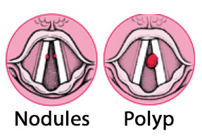
Tonsillitis. Acute viral or bacterial inflammation of the palatine tonsils and pharyngeal mucosa, usually Group A Streptococcus when bacterial. Symptoms: sore throat, odynophagia (pain on swallowing), fever, tonsillar exudates, trismus, and asymmetric tonsillar deviation if complicated by a tonsillar abscess.
Asymmetry is the alarm. Tonsillitis is symmetrical; an abscess pushes one tonsil across the midline and clamps the jaw. He added the airway point at [47:18]: chronic swollen tonsils that obstruct the airway are an emergency. And epiglottitis sits just below, “a little inferior to the tonsillitis”.
The slide’s picture carries a distinction its text does not: white patches or nodules on red swollen tonsils point bacterial; redness and swelling with no exudate points viral — which is how he read it aloud at [47:31].
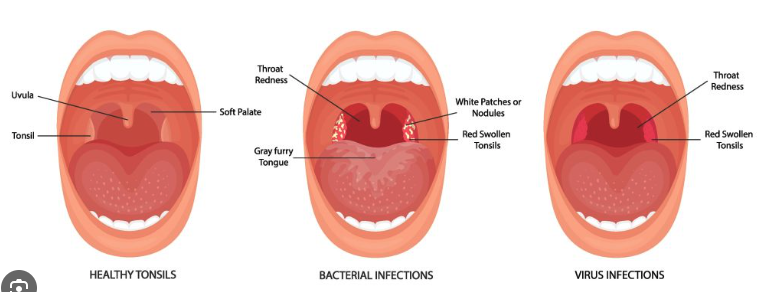
Cervical lymphadenopathy. Usually benign enlargement of cervical nodes responding to regional head and neck infection — viral upper respiratory infection, otitis media, dental disease — or to systemic inflammatory conditions. The reactive node is palpable and tender.
The red flags are a specific combination, not any large node: persistent, rubbery or matted, supraclavicular or cervical, in an older adult. That requires immediate assessment to rule out lymphoma.
Tender and soft is reactive; painless, rubbery and matted is not. Matted means the nodes have lost their individual capsules and moved as a mass — tissue behaving as if it is no longer respecting boundaries. He closed the lecture on it [48:41]: send a run-of-the-mill case to an ENT specialist; send one with a cancer history or chronic smoking straight to oncology.